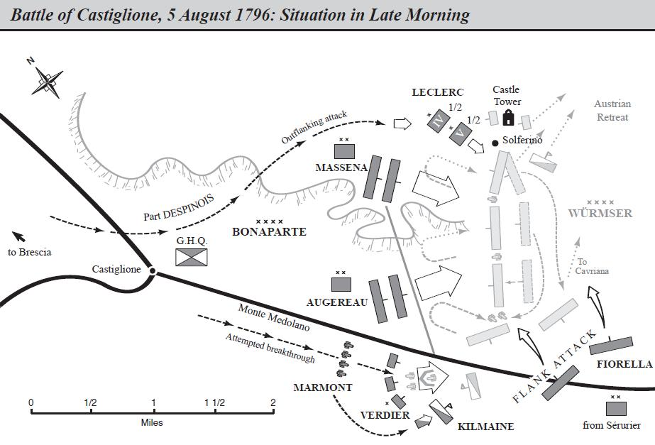
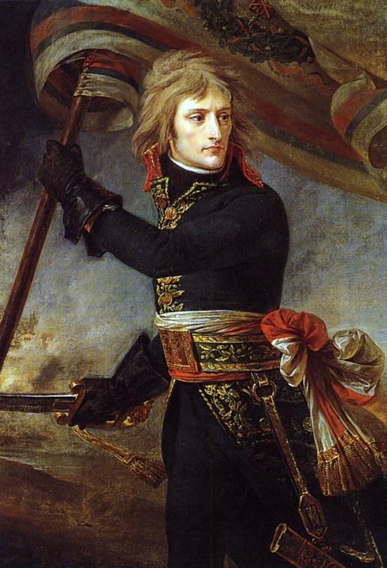

Từ ngày được Barras và nhiều nhân vật quan trọng khác của chế độ tin dùng, nghĩa là sau khi dẹp xong cuộc phiến loạn của bọn quân chủ vào ngày 13 Tháng Hái Nho, Bonaparte cố gắng thuyết phục những nhân vật ấy về sự cần thiết phải ngăn ngừa một cuộc liên minh mới của các cường quốc chống lại nước Pháp, phải mở một cuộc tiến công và ở nước Áo và đồng minh của Áo là nước Ý, và muốn thế, phải xâm chiếm miền Bắc nước Ý. Thật ra, đó không phải là một Khối Liên Minh mới mà vẫn là Khối Liên Minh cũ thành lập từ năm 1792, và năm 1795, nước Phổ đã rút khỏi Khối Liên Minh ấy sau khi đã ký một hòa ước riêng với nước Pháp ở Basle. Nhưng vẫn còn lại các nước Áo, Anh, Nga, vương quốc Sardegna, hai vương quốc Sicilia và một số các quốc gia Đức là Württemberg, Bavaria, Baden. Vì toàn thể Châu Âu lúc bấy giờ có thái độ thù địch với Viện Đốc Chính, nên Viện Đốc Chính cho rằng chiến trường chính của chiến dịch sắp tới, vào mùa xuân và mùa hạ năm 1796, phải là miền Tây và Tây Nam nước Đức và qua những miền đó, người Pháp sẽ cố gắng tiến vào những vùng thực sự là đất Áo. Viện Đốc Chính đã chuẩn bị cho chiến dịch này những đội quân tinh nhuệ nhất do những nhà chiến lược lỗi lạc nhất chỉ huy, đứng đầu là tướng tổng chỉ huy Moreau. Đối với đạo quân này, người ta không tiếc một thứ gì, trang bị của nó được tổ chức thật tuyệt vời và chính phủ Pháp tin cậy trước nhất vào nó.
Đối với những đề nghị khẩn khoản của tướng Bonaparte về việc xâm chiếm miền Bắc nước Ý bằng con đường từ các tỉnh Pháp giáp phía Nam, Viện Đốc Chính tỏ ra không tán thành mấy kế hoạch đó. Nhưng dầu sao người ta cũng phải nhận rằng như vậy sẽ có tác dụng nghi binh, buộc triều đình Vienna phải phân tán lực lượng và không chú ý tới chiến trường chính của cuộc chiến tranh sắp diễn ra. Để đạt mục đích ấy, người ta đã quyết định dùng mấy chục nghìn quân đóng ở phía Nam làm cho quân Áo và đồng minh của Áo, vua Sardegna, phải lo lắng.
Khi đặt ra vấn đề ai sẽ là chỉ huy trưởng ở mặt trận thứ yếu đó, thì Carnot (không phải là Barras như bấy lâu người ta vẫn khẳng định) chỉ định Bonaparte. Những vị đốc chính đều đồng ý ngay, vì các vị tướng có tiếng tăm nhất và có địa vị nhất chẳng ai màng đến chức trách đó. Quyết định bổ nhiệm Bonaparte làm chỉ huy trưởng đạo quân đi đánh nước Ý ký ngày 23 tháng 2 năm 1796 và ngày 11 tháng 3, vị tướng tổng chỉ huy mới đi nhận nhiệm vụ.
Trong lịch sử của Napoléon, cuộc chiến tranh đầu tiên này, do Napoléon điều khiển, bao giờ cũng vẫn chói lọi. Năm 1796, tên tuổi của Napoléon đã bay đi khắp Châu Âu, để rồi từ đó không bao giờ rời vũ đài lịch sử nữa. “Gã này còn đi xa, đã đến lúc cần phải chặn hắn lại”, đó là lời của Suvorov nói vào giữa lúc chiến dịch nước Ý của Bonaparte đang diễn ra ác liệt. Suvorov đã là một trong những người đầu tiên phát hiện cơn giông tố làm cho Châu Âu phải điêu đứng trong một thời gian rất dài vì những sấm sét của nó.
Tới đơn vị, qua kiểm tra, Bonaparte biết ngay tại sao những viên tướng có thế lực nhất của nền Cộng Hòa Pháp lại tỏ ra không thiết tha gì lắm với chức chỉ huy này. Quân đội ở vào tình trạng đến nỗi trông không khác gì một đám đói rách. Chưa bao giờ người ta thấy cái tệ bóc lột và ăn hối lộ dưới đủ mọi hình thức lại hoành hành quá dữ dội như vậy và điều đó cũng chưa bao giờ thấy xảy ra trong ngành hậu cần Pháp trong những năm cuối cùng của Hội Nghị Quốc Ước Tháng Nóng và dưới thời của Viện Đốc Chính. Đúng là Paris cung cấp rất ít cho đạo quân này, nhưng ngay “cái ít đó” cũng lại bị tham ô một cách nhanh chóng và trắng trợn. Người ta không biết 43.000 quân đóng ở Nice hoặc ở những vùng lân cận đã ăn và mặc ra sao. Vừa mới đến, Bonaparte đã được báo cáo là ngày hôm trước có một tiểu đoàn không chấp hành lệnh di chuyển vì không ai có giày. Đạo quân bị bỏ quên và bị bỏ rơi không những bị suy nhược về thể chất lại còn đèo thêm cả một sự lỏng lẻo về kỷ luật. Binh lính chẳng còn ngờ vực gì nữa, chính mặt họ đã trông thấy ở chỗ nào cũng có tệ ăn cắp gây ra cho họ biết bao đau khổ.
Một trong những nhiệm vụ khó khăn nhất đang đợi Bonaparte. Đối với Bonaparte, cái khó không những là phải lo giải quyết quần áo, giày dép, kỷ luật cho quân sĩ, mà là phải lo giải quyết những vấn đề đó ở dọc đường, sau khi đã bước vào hoạt động rồi và giữa hai đợt chiến dịch. Hoàn cảnh của Bonaparte có thể trở lên khó khăn thêm vì những va chạm với những cấp chỉ huy của đạo quân này, là cấp dưới của Bonaparte, như: Augereau, Berthier, Masséna, Sérurier. Họ có thể sẵn sàng phục tùng một viên tướng thâm niên hoặc có nhiều thành tích hơn (chẳng hạn như Moreau, chỉ huy trưởng đạo quân mặt trận Tây Đức), nhưng hình như họ lại lấy làm nhục khi phải nhận mệnh lệnh của một cấp trên mới 27 tuổi như Bonaparte. Có thể xảy ra những mâu thuẫn và tiếng đồn của hàng trăm cửa miệng trong các trại lính truyền đi, nhắc đi nhắc lại, bóp méo và thêu dệt mãi về vấn đề ấy. Thí dụ người ta truyền đi câu chuyện, không biết ai đã tung ra, là trong một cuộc cãi lộn gay go, Bonaparte, thân hình bé nhỏ, ngước nhìn Augereau cao lớn từ đầu đến chân và chắc là đã nói rằng: “Anh đã nói những lời phản nghịch, hãy coi chừng, đừng để tôi phải làm bổn phận của tôi. Cái thân hình to lớn của anh cũng không tránh cho anh khỏi bị xử bắn ngay bây giờ đâu”. Thực tế là ngay từ đầu, Bonaparte đã làm cho mọi người hiểu rằng Bonaparte không thể chịu được sự chống đối lại trong đơn vị mình và Bonaparte sẽ đập tan tất cả những kẻ nào cưỡng lại mình, dù kẻ đó ở cấp bậc nào. “Ở đây, phải đốt, phải bắn”, Bonaparte đã báo cáo đại khái như vậy và không giải thích thêm gì với Viện Đốc Chính ở Paris.
Bonaparte lập tức tiến hành một cuộc đấu tranh kiên quyết chống lại nạn trộm cắp đang hoành hành dữ dội. Binh lính đã chú ý ngay đến việc đó và nó đã góp phần vào việc khôi phục kỷ luật hơn hẳn cả những ban chuyên môn đi xử bắn. Nhưng trong hoàn cảnh của Bonaparte lúc ấy, trì hoãn các cuộc hành binh đến khi trang bị xong bộ đội thì thực tế chẳng khác gì thôi không mở chiến dịch năm 1796. Bonaparte đã hạ quyết tâm và đã nói rõ điều đó trong lời tuyên bố của mình với binh sĩ. Người ta đã tranh luận rất nhiều để tìm xem bản tuyên bố được đưa vào sử sách ấy đã được viết xong đúng vào lúc nào và ngày nay, những nhà viết tiểu sử của Napoléon khẳng định rằng chỉ có những câu đầu tiên mới đúng là của Napoléon, còn hầu hết phần sau chỉ là đoạn văn sau này người ta thêm thắt vào. Tôi nhận thấy ngay cả những câu đầu người ta cũng chỉ có thể bảo đảm chúng là của Napoléon về ý nghĩa chung nhiều hơn là về từng chữ một: “Hỡi các binh sĩ, các người không đủ cơm ăn, không đủ áo mặc... Ta sẽ đưa các người đến những cánh đồng phì nhiêu nhất thế giới”.
Ngay từ những bước đầu, Bonaparte đã cho rằng chiến tranh phải nuôi chiến tranh, rằng mỗi binh sĩ phải tự mình thấy gắn bó với chiến dịch sắp mở ra ở miền Bắc nước Ý và cần phải chỉ cho binh sĩ biết rằng không cần phải đợi người ta cung cấp cho những thứ cần thiết, mà chính là mình phải lấy của địch tất cả những gì mình cần đến và hơn thế nữa. Nói chuyện với ba quân lần ấy, người tướng trẻ chỉ phát biểu chỉ có vậy. Bonaparte luôn luôn biết tạo nên, tăng cường và nuôi dưỡng uy tín và quyền hành của cá nhân mình trong tâm hồn người chiến sĩ. Những chuyện dông dài nói “tình thương yêu” của Napoléon đối với binh sĩ, những người mà trong những phút sống thật thà nhất đối với cõi lòng của mình, Napoléon đã gọi là “bia đỡ đạn”, đều là những chuyện không có ý nghĩa gì hết. “Thương yêu binh sĩ”, không thể có chuyện ấy ở Napoléon, nhưng Napoléon rất chăm lo đến binh sĩ. Napoléon đã khéo làm việc ấy, khiến cho binh sĩ bề ngoài thấy là họ đã được cấp trên chú ý đến cá nhân họ nhưng thực ra Napoléon chỉ lo làm sao có trong tay một công cụ thật tốt và có năng lực chiến đấu.
Tháng 4 năm 1796, trong giai đoạn đầu của chiến dịch đầu tiên của Bonaparte, dưới con mắt của binh sĩ, Bonaparte chỉ là một pháo thủ có năng lực, là người mà hơn hai năm trước đây đã chiến đấu tốt trong cuộc vây thành Toulon, là một viên tướng đã nã súng vào bọn phiến loạn đang tiến công Hội Nghị Quốc Ước vào ngày 13 Tháng Hái Nho, và đã được nhận chức chỉ huy đạo quân miền Nam nước Pháp, ngoài ra chẳng có gì hơn nữa. Lúc bấy giờ, Bonaparte còn chưa có uy tín và chưa nắm chắc được binh sĩ. Vì vậy, Bonaparte quyết định tác động vào người lính bằng cách duy nhất là vạch ra trực tiếp, cụ thể và thiết thực cho họ thấy rằng những của cải vật chất đang chờ đợi họ ở nước Ý.
Ngày 9 tháng 4 năm 1796, Bonaparte quyết định vượt qua núi Apls cùng với quân đội.
Tướng Jomini, người Thụy Sĩ, nhà bác học về chiến lược chiến thuật, tác giả nổi tiếng của một quyển sử dày nói về chiến dịch của Napoléon, lúc đầu làm việc dưới quyền của Napoléon, sau chạy sang hàng ngũ người Nga, có nhận xét rằng ngay từ những ngày đầu tiên của cuộc chỉ huy đầu tiên, Bonaparte đã tỏ ra can đảm đến liều lĩnh và coi thường cả nguy hiểm đối với bản thân: Bonaparte đã cùng với bộ tham mưu của mình chọn con đường nguy hiểm nhất, nhưng ngắn nhất, qua con đường Corniche nổi tiếng chạy dọc theo dãy núi Apls giáp biển, luôn nằm phơi dưới tầm hỏa lực của pháo trên chiến thuyền Anh đi tuần phòng ở gần bờ. Đây là lần đầu tiên mà một trong những đặc điểm của Napoléon đã được biểu lộ: Một mặt, so với những người đồng thời cùng có những đặc điểm gan góc, lì lợm, can đảm, dũng mãnh như Napoléon, thí dụ như các Thống Chế Lannes, Murat, Ney, tướng Miloradovich[17], hoặc như Skobelev trong số những tướng tá của thời kỳ gần đây hơn, thì Napoléon đã không hề được nổi tiếng về những đặc điểm ấy. Bao giờ Napoléon cũng cho rằng nếu không thật cần thiết và không tuyệt đối cần thiết thì người chỉ huy trong thời chiến không được liều thân vào nơi nguy hiểm, bởi vì chỉ cái chết của người đó cũng đã đủ gây hoang mang, hốt hoảng, thất bại cho trận đánh, thậm chí cho cả toàn bộ cuộc chiến tranh. Nhưng mặt khác, Napoléon cho rằng nếu tình thế đòi hỏi mình phải gương mẫu thì người chỉ huy phải xông vào lửa đạn, không được do dự.
Cuộc hành quân vượt qua đường Corniche được tiến hành thuận lợi từ ngày 3 đến ngày 9 tháng 4 năm 1796; khi đã tới được nước Ý, Bonaparte lập tức hạ quyết tâm chiến đấu ngay. Đối diện với Bonaparte là quân đội của nước Áo và Piedmont phối hợp lại, chia thành ba cụm, bảo vệ các con đường đi Piedmont và đi Genoa. Trận đầu tiên đánh với quân đoàn áo của tướng Argenteau diễn ra ở trung tâm vùng Montenotte. Tập trung tất cả lực lượng thành một khối mạnh và đánh lừa được quân cảnh giới của tướng tổng chỉ huy áo Beaulieu lúc đó đang ở quá phía Nam trên đường đi Genoa, Bonaparte thọc mạnh vào trung tâm quân địch. Chỉ vài giờ sau, quân Áo bị thua. Nhưng đó mới chỉ là một bộ phận của đội Quân Áo. Chỉ cho binh sĩ của mình nghỉ ngơi trong một thời gian ngắn, Bonaparte lại tiến quân ngay. Hai ngày sau, quân đội Piedmont bị đánh thua liểng xiểng ở gần vùng Millesimo phải rời bỏ chiến địa đầy thương binh tử sĩ, mất 13 cỗ pháo, năm tiểu đoàn hạ khí giới đầu hàng với số còn lại bỏ chạy: Đó là kết quả cuộc chiến đấu của quân Liên Minh. Bonaparte lập tức truy kích, không cho quân địch có thời gian củng cố lại hàng ngũ.
Những nhà viết sử quân sự coi những trận chiến đấu đầu tiên của Bonaparte - “sáu thắng lợi trong sáu ngày” - chỉ là một trận đánh và một trận đánh lớn. Nguyên tắc chiến đấu cơ bản của Napoléon trong những ngày ấy đã biểu hiện đầy đủ: Nhanh chóng tập hợp lực lượng lớn thành một khối mạnh, đánh hết mục tiêu chiến lược này đến mục tiêu chiến lược khác, không dùng đến những cuộc điều quân quá phức tạp, và chia cắt địch ra mà đánh.
Một trong những nét đặc biệt khác của Napoléon cũng đã được biểu hiện, đó là khả năng giải quyết vấn đề chính trị và chiến lược như là một thể thống nhất không tách rời nhau được; trong suốt tuần lễ của tháng 4 năm 1796, tuy đi từ thắng lợi này đến thắng lợi khác, nhưng không lúc nào Bonaparte quên rằng phải làm sao buộc nước Piedmont (vương quốc Sardegna) ký thật sớm hiệp ước riêng, để cho trước mặt mình chỉ còn quân Áo.
Sau khi quân Pháp chiến thắng quân Piedmont ở Mondovi và thành phố này đầu hàng Bonaparte, thì viên tướng Piedmont là Colli đi vào đàm phán hòa bình, và hiệp ước đình chiến với Piedmont được ký kết ngày 28 tháng 4. Những điều kiện cực kỳ nặng nề đã đè lên kẻ chiến bại: Vua Piedmont, Victor Amadeus, phải giao cho Napoléon hai pháo đài tốt nhất của mình và nhiều địa phương khác nữa. Hòa ước chính thức ký với quốc gia này ở Paris vào ngày 15 tháng 5 năm 1796. Nước Piedmont chính thức cam kết không để quân đội của một nước nào đi qua lãnh thổ Piedmont, trừ quân đội của nước Pháp và từ nay trở đi không liên minh với bất cứ một nước nào. Nước Piedmont nhượng lại cho nước Pháp lãnh địa Nice và toàn bộ vùng Savoy. Ngoài ra, biên giới nước Pháp và nước Piedmont được “điều chỉnh lại” một cách rất có lợi cho nước Pháp. Nước Piedmont còn cam kết cung cấp lương thực cần thiết cho quân đội Pháp.
Thế là nhiệm vụ đầu tiên đã hoàn thành. Chỉ còn lại quân Áo. Bằng những thắng lợi mới, Bonaparte đã đẩy lùi quân Áo đến sông Po, bức quân Áo rút lui sang bờ sông phía Đông, rồi Bonaparte cũng vượt qua sông, tiếp tục truy kích. Hoảng hốt bao trùm lên tất cả triều đình Ý. Công tước xứ Parma, tuy thực tế không đánh nhau với nước Pháp, nhưng lại là một trong những nạn nhân đầu tiên; Bonaparte đã không tin những lời cam kết, không công nhận sự trung lập của xứ này, bắt Parma phải đóng góp một số tiền là hai triệu francs vàng và nộp 1.700 con ngựa. Bonaparte vẫn tiếp tục tiến quân, chẳng bao lâu đã tiến đến làng Lodi nhỏ bé và phải vượt qua sông Adda. Vị trí trọng yếu này do một binh đoàn 10.000 quân Áo phòng giữ.
Trận chiến đấu lừng danh Lodi diễn ra vào ngày 10 tháng 5. Lần này cũng như lần vượt qua Corniche, Bonaparte thấy cần thiết phải liều mạng: Lúc cuộc chiến đấu diễn ra ác liệt ở đầu cầu thì Bonaparte, dẫn đầu một tiểu đoàn cận vệ, xông tới dưới làn mưa đạn, 20 khẩu pháo của quân Áo nhả đạn quét sạch cầu và lân cận. Lính cận vệ, do Bonaparte dẫn đầu, đã chiếm được cầu và đánh bật được quân Áo ra xa; quân Áo bỏ lại trên chiến trường 15 khẩu pháo và chừng 2.000 người vừa bị chết và bị thương. Bonaparte lập tức truy kích quân địch, và ngày 15 tiến vào Milan. Ngày hôm trước, 14 tháng 3 (ngày 26 Tháng Hoa), Bonaparte đã báo cáo về Viện Đốc Chính rằng từ nay miền Lombardia thuộc về nước Pháp.
Tháng 6, theo lệnh của Napoléon, một bộ phận quân Pháp do tướng Murat chỉ huy, đã chiếm được Leghorn, trong khi tướng Augereau chiếm được Bologna. Vào trung tuần tháng 6, Bonaparte thân hành đánh chiếm Modena, rồi đến lượt Tuscany, mặc dù công tước xứ này vẫn đứng trung lập trước cuộc chiến tranh Áo - Pháp. Bonaparte không đếm xỉa gì đến thái độ trung lập của các quốc gia Ý. Bonaparte vào các thành phố, làng mạc, trưng thu tất cả những gì cần thiết cho quân đội, nói chung là vơ vét tất cả những gì mà Bonaparte cho là đáng lấy, kể từ những cỗ pháo, khẩu súng, thuốc súng cho đến những bức tranh của các họa sĩ bậc thầy thời Phục hưng.
Bonaparte nhìn bằng con mắt đầy khoan dung những trò giải trí kiểu ấy, những trò mà lúc bấy giờ chiến binh của ông ta say sưa lao vào, đến nỗi nhân dân địa phương đã phải nổi dậy bạo động. Ở Pavia, nhiều lần nhân dân đã xông vào đánh binh lính Pháp. Ở Lugo (gần Ferrera) cũng vậy, nhân dân đã giết chết năm kỵ binh và sau đó thì thành phố bị xử theo quân lệnh: Vài trăm người bị chém đầu và binh lính được lệnh tàn phá, cướp bóc thành phố, chúng hạ sát tất cả những người dân nào bị chúng nghi là chống lại chúng. Nhiều nơi khác cũng phải chịu đựng những sự trừng phạt tàn bạo như vậy. Sau khi đã dùng pháo và đạn dược tước được của quân Áo hoặc của các quốc gia trung lập Ý để tăng cường, bổ sung đầy đủ cho đơn vị pháo binh của mình, Bonaparte tiến thẳng về pháo đài Mantua, một trong những pháo đài mạnh nhất Châu Âu do địa thế thiên nhiên cũng như do nghệ thuật kiến trúc hệ thống phòng ngự.
Vừa bắt đầu chính thức vây thành Mantua thì Bonaparte được tin một đạo quân Áo gồm 30.000 người được đặc biệt cấp tốc phái từ Tyrol đến để cứu nguy cho Mantua. Đạo binh ấy đặt dưới quyền chỉ huy của Wurmser, một viên tướng rất mẫn tiệp và có tài năng. Tin này đã cổ vũ mạnh mẽ tất cả những kẻ thù của nước Pháp. Hơn nữa, trong suốt mùa xuân và mùa hè năm 1796, hàng nghìn dân thành thị và nông thôn bị điêu đứng vì nạn cướp phá của quân đội tướng Bonaparte, đã nhập bọn với tăng lữ và bọn quý tộc nửa phong kiến miền Bắc nước Ý là những kẻ căm ghét cả đến những nguyên lý của cuộc cách mạng tư sản do quân đội Pháp mang vào nước Ý. Nước Piedmont, đã thua trận và buộc phải ký hòa ước, có thể nổi lên đánh vào hậu phương của Bonaparte và cắt đứt đường giao thông của Bonaparte với nước Pháp.
Bonaparte cắt 16.999 quân dùng vào việc vây thành Mantua, 29.000 quân còn lại làm đội dự bị, và chờ viện binh ở Pháp sang. Bonaparte cử Masséna, một trong những tướng giỏi nhất của Bonaparte, giao chiến với Wurmser. Nhưng Wurmser đã đánh tan quân Masséna, Bonaparte liền cử tướng Augereau, một tướng rất có năng lực và được phong cấp tướng trước Bonaparte. Augereau cũng lại bị Wurmser đánh lui nốt. Quân Pháp lâm vào tình thế tuyệt vọng, và lúc ấy Bonaparte đã tiến hành một cuộc hành binh mà theo ý kiến của những nhà lý luận quân sự trước đây cũng như hiện đại nhất đều cho rằng: Dù Bonaparte có bị tử trận ngay vào thời kỳ đó, vào buổi bình minh của sự nghiệp lâu dài của Bonaparte, thì chỉ một cuộc hành binh đó cũng đã đủ bảo đảm cho Bonaparte “một vinh quang bất diệt” (lời nói của Jomini). Tưởng rằng sắp thắng được địch thủ đáng gờm của mình, Wurmser cho kéo quân vào thành Mantua đang bị vây hãm, và như vậy là ông ta đã giải vây được, thì thình lình Wurmser được tin Bonaparte đang tập trung tất cả lực lượng tiến công vào một cánh quân Áo khác đang hoạt động trên các đường giao thông giữa Bonaparte với Milan và đã đánh cho cánh quân Áo ấy bị thua liền ba trận ở Lonato, Salo và ở Brescia. Được tin ấy, Wurmser dùng toàn bộ lực lượng rời khỏi Mantua, sau khi đánh tan được phòng tuyến quân Pháp án ngữ ở trước mặt do tướng Valette chỉ huy, và qua một loạt trận giao chiến đánh lùi được những cánh quân Pháp khác, cuối cùng đã vấp phải cánh quân do chính Bonaparte chỉ huy gần Castiglione, nơi đây Wurmser đã thất bại nặng vì một cuộc hành binh tài tình của Napoléon; nhờ cuộc hành binh ấy, một bộ phận quân Pháp vừa đánh tạt sườn vừa đánh tập hậu quân Áo.
Sau một loạt trận chiến đấu khác. Wurmser, cùng với tàn quân, lúc đầu đã chạy vòng quanh thượng lưu sông Adige, rồi sau rút vào thành Mantua. Bonaparte quay trở lại bao vây. Lần này, để ứng cứu không phải chỉ riêng cho Mantua mà còn cho cả chính Wurmser nữa, nước Áo đã tức tốc điều động một đạo quân mới do Alvinczi chỉ huy. Cũng như Wurmser và Đại Công Tước Chales, Alvinczi là một trong những tướng giỏi của đế quốc Áo. Bonaparte để lại 8.300 quân làm lực lượng vây thành Mantua và dẫn đầu 28.500 quân tiến đánh Alvinczi. Lực lượng dự bị của Bonaparte hầu như chẳng còn gì, chưa đầy 4.000 người. “Người tướng nào cố giữ lại những đội quân cho những trận đánh hôm sau thì hầu như bao giờ cũng bị thua”, Napoléon luôn nhắc lại như vậy mặc dầu ông không hề phủ nhận tầm quan trong to lớn của các lực lượng dự bị trong cuộc chiến tranh kéo dài. Về số lượng, quân Alvinczi đông gấp bội và đã giao chiến nhiều trận với quân đội Pháp. Hạ lệnh rút quân ra khỏi Vicenza và một vài vị trí khác, Bonaparte đã tập trung toàn bộ lực lượng để đánh một đòn quyết định.

.Ngày 15 tháng 11 năm 1796, một trận kịch chiến đẫm máu đã bắt đầu ở gần Arcole và kết thúc vào buổi tối ngày 17 tháng 11. Cuối cùng, Alvinczi chạm trán với Bonaparte.
Quân Áo đông hơn nhiều và chiến đấu với một tinh thần ngoan cường phi thường, vì triều đình Hapsburg[18] đã phái đến những trung đoàn tinh nhuệ nhất. Một trong những cứ điểm trọng yếu và có tiếng nhất là cầu Arcole. Ba lần quân Pháp đã xung phong, đã đoạt được cầu, ba lần lại bị đánh lui và bị tổn thất nặng nề. Diễn lại đúng hệt chiến công ở Lodi mấy tháng trước đây, tướng tổng chỉ huy Bonaparte lại tay cầm cờ lao lên trước. Bên cạnh Bonaparte, nhiều binh lính và một số sĩ quan hầu cận bị giết chết. Trận đánh kéo dài ròng rã ba ngày, kể cả những lúc tạm ngừng ngắn ngủi. Alvinczi đã bị đánh bại và buộc phải lui.

.Quân Áo phải mất một tháng rưỡi mới hàn gắn được những thua thiệt ở Arcole và chuẩn bị phục thù. Trận quyết định đã diễn ra vào trung tuần tháng 1 năm 1797. Lần này, quân đội Áo, noi gương nhà chiến lược trẻ tuổi người Pháp, cũng tập trung thành một khối lớn. Trong một trận đánh đẫm máu kéo dài ba ngày ở gần Bivoli, những ngày 14, 15, 16 tháng 1 năm 1797, tướng Bonaparte đã đánh tan tành toàn bộ quân đội Áo. Alvinczi, cùng với tàn binh chạy thoát, không còn nghĩ đến việc giải vây cho Mantua và đạo quân của Wurmser đang bị hãm trong đó được nữa. Sau trận Rivoli hai tuần rưỡi thì Mantua đầu hàng. Bonaparte đã đối xử với bại tướng Wurmser một cách khoan dung đại lượng nhất.
Chiếm xong Mantua, Bonaparte tiến quân lên phía Bắc, hiển nhiên ông ta đe dọa những vùng đất đai chiếm hữu cha truyền con nối của hoàng gia Áo. Sau khi Đại Công Tước Chales người mà hồi đầu mùa xuân năm 1797, được điều động vội vã sang chiến trường nước Ý - đã bị Bonaparte đánh bại trong nhiều trận và đã bị đuổi dồn về đèo Brenner và ở đó Đại Công Tước đã phải rút lui cùng với nhiều tổn thất nặng nề, thì tình hình thành Vienna trở lên nhốn nháo, hoảng hốt, trước hết là ở hoàng cung. Nhân dân kinh thành được biết rằng trong hoàng cung người ta đang vội vàng đóng gói vàng bạc, châu báu của hoàng gia cất giấu vào chỗ kín. Một cuộc xâm lược của quân đội Pháp đang đe dọa thủ đô nước Áo. “Tướng Hannibal đã đứng ở cổng rồi! Bonaparte đang ở Tyrol rồi! Ngày mai Bonaparte sẽ đến Vienna!”.
Những tin đồn loại ấy, những lời bàn tán, những tiếng than vãn như vậy còn âm vang mãi trong ký ức những người đương thời đã sống qua những giờ phút ấy ở cái thủ đô già nua và béo bở của đất nước quân chủ của dòng họ Habsburg. Những đội quân Áo tinh nhuệ nhất bị tiêu diệt, những tướng lĩnh thao lược và tài năng nhất bị đại bại, tất cả miền Bắc nước Ý bị mất, thủ đô nước Áo bị đe dọa trực tiếp, đó là thành tích cái chiến dịch một năm của Bonaparte bắt đầu vào cuối tháng 3 năm 1796, thời kỳ mà lần đầu tiên Bonaparte làm chỉ huy trưởng một đạo quân Pháp. Tên tuổi Bonaparte vang lừng khắp Châu Âu.
Chú thích:
[17] Miloradovich (1771-1825 ), tướng Nga, học trò của Suvorov, người kế tục của Kutuzov. Miloradovich nổi tiếng can đảm, kiên quyết và tích cực trong các trận đánh do ông chỉ huy.
[18] Hapsburg: Dòng họ làm chủ nước Áo, đồng thời cũng làm Hoàng Đế Đức (tức Hoàng Đế Đế Quốc La Mã Thần Thánh). Nguyên đất Áo xưa kia là một lãnh địa thuộc